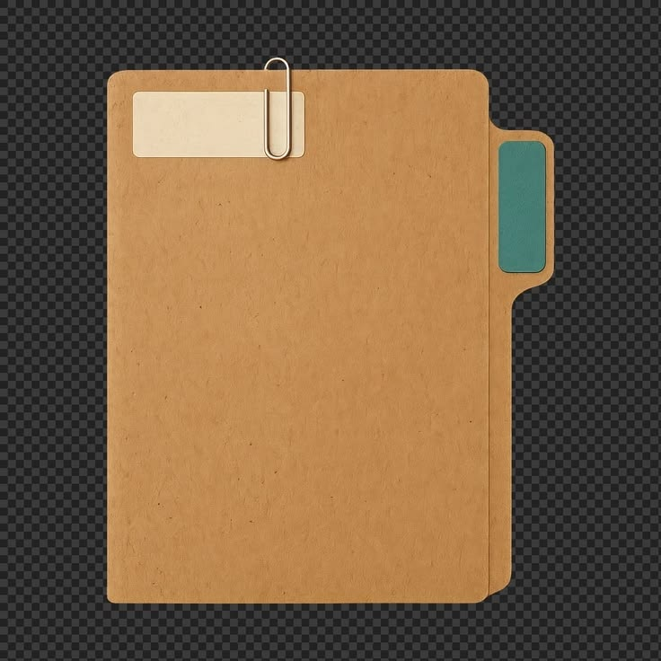

Nuestros Artistas
Expedientes y carpetas oficiales de proyectos en desarrollo, producción y distribución global.

FILE // 001
Artista 01
Urban / New Wave
Próximamente

FILE // 002
Artista 02
Regional Urbano
Próximamente

FILE // 003
Artista 03
Alternative Sound
Próximamente

FILE // 004
Artista 04
Producer / Composer
Próximamente

FILE // 005
Artista 05
Secret Roster
Próximamente